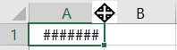

Dicas de Excel
Vídeo Youtube - Dicas de seleção e edição de células - Teclas de AtalhoDiversas Dicas | Teclas de Atalho
Teclas de atalho
Backspace --> Apaga todo o conteúdo, e deixa o cursor piscando na célula. Também apaga caracteres à esquerda, quando o cursor está dentro da célula.Delete --> Apaga todo o conteúdo da célula. Também apaga caracteres na posição atual e à direita.
Alt + Gr --> obtém a terceira função de uma tecla referente ao teclado alfanumérico.
Alt + F4 --> fecha uma janela.
Alt --> Tecla de atalho em combinação com outras teclas, por exemplo: Alt + A --> Abre o menu (guia) arquivo.
Ctrl --> Tecla de atalho em combinação com outras teclas, veja abaixo:
Ctrl + Seta para direita --> Vai para a última coluna referente a linha atual (XFD).
Ctrl + Seta para baixo --> Vai para a última linha referente a coluna atual (1048576).
Ctrl + Seta para cima --> Vai para a primeira linha referente a coluna atual (1).
Ctrl + Seta para esquerda --> Vai para a primeira coluna referente a coluna atual (A).
Ctrl + P --> abre a caixa de diálogo de impressão.
Ctrl + O --> cria um documento novo.
Ctrl + B --> salva o documento.
Ctrl + N --> ativa / desativa negrito.
Ctrl + I --> ativa / desativa itálico.
Ctrl + S --> ativa / desativa sublinhado.
Ctrl + L --> abre a caixa de diálogo que permite localizar uma informação.
Ctrl + U --> abre a caixa de diálogo que permite substituir uma informação por outra.
Ctrl + Home --> Vai para a primeira célula (A1).
Ctrl + End --> Vai para a última célula (coluna e linha) que contenha dados, ou seja.
F5 --> abre a caixa de diálogo, onde você pode ir para uma determinada célula. Na parte inferior, tem o botão Especial - Ele permite colar dados das células em outros formatos.
Tab --> Vai para a célula à direita.
Shift + Tab --> Vai para a célula à esquerda.
Enter --> passa para próxima linha.
Shift --> obtém a segunda função de uma tecla. Por exemplo: Para inserir o acento circunflexo: Segure a tecla Shift pressionada juntamente com a tecla que tem o acento til na parte inferior, e o circunflexo na parte superior desta tecla.
F2 --> permite editar informações da célula.
Caps Lock --> alterna entre letras maiúsculas e minúsculas.
Esc --> cancela, volta.
Page Down --> avança uma página.
Page Up --> volta uma página.
Insert --> O padrão da tecla Insert, é inserir caracteres. Quando pressionamos esta tecla, os caracteres serão substituídos.
Num Lock --> Ativa o tecla numérico. Alguns computadores, quando é ligado, esta tecla não vem ativada. Normalmente, tem um Led, que indica se a mesma está ativada ou não.
Diversas Dicas
Como quebrar linhas dentro das células Digite algum texto dentro de uma célula;Pressione [Alt]+[Enter] para inserir um RETORNO FORÇADO, iniciando uma nova linha dentro daquela célula;
Digite mais um pouco de texto;
Pressione [Enter] quando tiver acabado de digitar todo o resto do texto.
O Excel irá dar uma quebra de linha para que todas as linhas caibam no espaço (largura) da célula;
Como copiar dias da semana Digite um dia da semana (por exemplo: domingo) e pressione a tecla Enter; Clique na célula que você digitou domingo. Passe o mouse no canto inferior direito da célula, até aparecer cruz preta. Veja abaixo:
 Arraste a célula com o dia sobre as demais células, até alcançar o número de dias desejados;
Pronto em cada célula consecutiva apareceu um dia da semana (a 2ª célula escrita segunda-feira, a 3ª quarta-feira, e assim por diante;
Arraste a célula com o dia sobre as demais células, até alcançar o número de dias desejados;
Pronto em cada célula consecutiva apareceu um dia da semana (a 2ª célula escrita segunda-feira, a 3ª quarta-feira, e assim por diante;Mas se o que você deseja é copiar o mesmo dia da semana, (exemplo: para criar 4 colunas de domingo), faça assim:
Digite um dia da semana (por exemplo: domingo);
Arraste a célula com o dia sobre as demais células, mas mantendo a tecla [Ctrl] pressionada, até alcançar o número de dias desejados;
Pronto em cada célula consecutiva apareceu o mesmo dia da semana (na 2ª célula estará escrito domingo, na 3ª estará domingo, e assim por diante.
Como inserir data ou hora de modo rápido
Quando precisar digitar a data ou a hora numa célula, por que digitar toda a informação, correndo o risco de errar o que está digitando, quando você pode apenas dar 2 toques?
Como fazer isso no Excel, fácil: Para inserir a Data pressione Ctrl + ; (a tecla CTRL e a tecla ; juntas)
Para inserir a Hora pressione Ctrl + : (a tecla CTRL + Shift e aí você vai conseguir obter a tecla : juntas)
O que significa ##### na minha célula O Excel está apenas informando que não tem espaço para mostrar o resultado numérico da sua fórmula.
Para resolver, basta dar um duplo clique na margem direita do cabeçalho da coluna onde a célula afetada reside, isto é entre a divisão de coluna com a outra. Veja abaixo:

Como somar rapidamente números
Selecione com o mouse toda a região que contém os números a somar;
Clique no botão de Soma (marcado com o símbolo de [Somatória (letra grega: Sigma)]; - Veja abaixo:
Como mover uma região de dados
Selecione com o mouse, toda a região que quer mudar de lugar;
Passe o mouse sobre uma das bordas (o cursor muda para uma seta);
Mantenha pressionado o botão enquanto move toda a região para o novo local;
Solte o botão do mouse. Veja abaixo:
Como definir a área que deseja Visualizar a Impressão ou Imprimir
Para configurar a impressão de uma região no Excel, você pode selecionar a área a visualizar ou imprimir e então selecionar o comando: aba Layout da Página / Área de Impressão / Definir área de impressão.
Depois é só mandar imprimir.
Para eliminar a área definida, repita o caminho acima, e selecione: Limpar área de impressão
Como gerar números realmente randômicos
=ALEATÓRIO() e pressione Enter.
A célula mostrará um número randômico (no caso entre 0 e 1).
Para outras faixas digite =ALEATÓRIO()*10 (para números entre 1 e 10);
=ALEATÓRIO()*100 (para números entre 1 e 100);
=ALEATÓRIO()*1000 (para números entre 1 e 1000);
e assim por diante... E o melhor de tudo: cada vez que você pressionar a tecla F9, ou entrar novamente na planilha, todos os números serão novamente gerados).
Como fazer múltiplas comparações (função SE)
Uma das mais usuais operações que se delega ao Excel, para que ele nos ajude na tomada de decisões de forma automática, é usando a função SE (como no exemplo abaixo):
=SE(A5>0,5*A4;"ALTO";"BAIXO").
Neste caso o Excel compara o valor na célula A5, e verifica se é maior que a metade do valor da célula A4;
se verdadeiro mostra "ALTO", se falso mostra "BAIXO";
Mas às vezes precisamos de lançar mão de mais de uma comparação.
No exemplo abaixo é necessário saber se um aluno foi aprovado, se for reprovado, ou se ficou de recuperação:
=SE(Media<5;"Reprovado";SE(Media=5;Recuperação";"Aprovado"))
Este exemplo usa o Aninhamento de funções SE: como um dos argumentos da função SE inicial é usada uma outra função SE, e cujo argumento final (no caso o "Aprovado") é a resposta para falso nas duas condições definidas (Media < 5 e Media = 5).
Vamos por partes: devemos montar nossa seqüência de SEs de sorte a pegar cada faixa seqüencialmente; colocando os valores da taxa para cada caso "fechado" e partindo para novos SEs nos casos ainda "em aberto"; veja a fórmula abaixo primeiramente (Atenção a linha de baixo deve ser escrita numa ÚNICA linha):
=SE(Custo<100;Custo*0,08;SE(Custo<150;Custo*0,10;
SE(Custo<200;Custo*0,12;Custo*0,15)))
Explicando melhor, passo a passo:
1. Se o custo for <100 , o cálculo é Custo * 8% , direto;
2. Se o custo for <150 ( e ele não era inferior a 100 - SE anterior) o cálculo é Custo * 10% ; 3. Se o custo for <200 ( e ele não era inferior a 150 - SE anterior) o cálculo é Custo * 12% ;
4. Se o custo não for nenhum dos anteriores ( então ele é maior ou igual a 200 ), o cálculo é Custo * 10%
Como fazer que a pasta padrão seja outra, do que a pasta Meus Documentos
Quando se instala o Excel, por padrão ele aponta para a pasta "Meus Documentos" como o local padrão para ler e gravar planilhas. Para mudar este padrão, e permitindo que você defina outra pasta, siga os passos abaixo:
1. Selecione o menu Arquivo / Opções;
2. Clique na opção Salvar;
3. No campo "Localização Padrão do Arquivo local:" digite o caminho completo;
exemplo: C:\Diversos\Excel;
4. Pressione o botão OK.
Como fixar algumas células, como um cabeçalho, para não se moverem
1. Selecione por exemplo na primeira linha, o título (se existir) e na próxima linha, os nomes de cada coluna ((campo), como por exemplo: nome, funcionário, salário, etc.)
2. Selecione a aba Exibir / Congelar Painéis / Congelar Painéis;
Pronto irá aparecer um traço horizontal mais grosso, ou um traço vertical (ou os dois), e você poderá se deslocar à vontade (utilizando a seta da barra de rolagem) que as linhas, ou colunas (ou as duas ao mesmo tempo) selecionadas ficarão estáticas, sempre visíveis na tela.
Para remover um painel que foi congelado, basta selecionar a aba Exibir / Descongelar Painéis.
Algumas funções básicas:
Planilha de vendas abaixo:
2. Digite a fórmula do valor Máximo: =MÁXIMO(B2:B13) - (perceba quando é 2 pontos e quando é ponto e vírgula, pois dois ponto, considera da primeira célula até a última, e ponto e vírgula, somente as células que você informar.
3. Coloque o cursor na célula B16 - Digite a fórmula do valor Mínimo: =MÍNIMO(B2:B13)
4. Coloque o cursor na célula B17 - Digite a fórmula da Média: =MÉDIA(B2:B13)
5. Coloque o cursor na célula B18 - Digite a fórmula da Soma: =SOMA(B2:B13)
Como preencher uma região com datas sem aparecer os finais-de-semana 1. Na primeira célula (por exemplo: G1) digite a data inicial desejada;
2. Na célula seguinte (G2) digite a fórmula: =G1+(MOD(G1;7)=6)*2+1;
3. Formate a célula para que a data apareça no formato desejado;
4. Clique na célula G2 e, segurando o botão esquerdo do mouse sobre seu canto inferior direito, arraste-a até preencher toda a região desejada;
Explicação Técnica: a função +(MOD(X;7)=6 quando verdadeira (isto é: quando a data anterior é uma sexta-feira) gera a adição de 1*2 (= 2 dias) à data anterior, pulando efetivamente de tal data (que é uma sexta-feira) direto para a próxima segunda-feira;
Excel Essencial